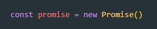
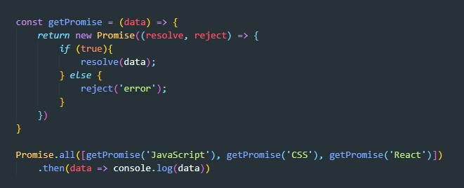
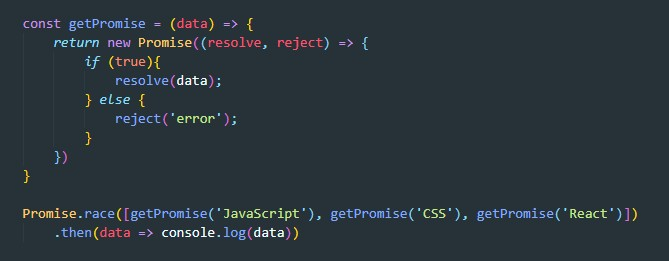
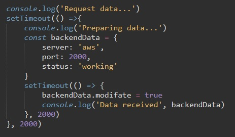
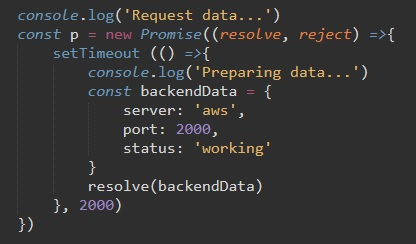
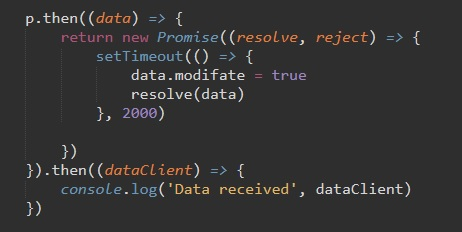
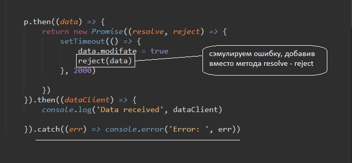
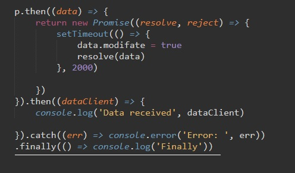

Создание promise
Конструктор Promise принимает в качестве аргумента callBack функцию, которую еще называют executer, эта функция принимает два аргумента (которые являются функциями): resolve - выполнится в случае успешного выполнения Promise. И reject - выполнится в случае ошибки.
all - этот метод принимает в качестве аргумента массив промисов, и метод then выполнится только тогда, когда все промисы будут выполнены.
race - этот метод так же принимает массив промисов и в метод then попадет тот промис который авполнится первым
Для понятия работы Promise сэмулируем запрос на сервер
Рассмотрим код:
Сначала мы выводим в консоли надпись: "Request data..."
Затем запускаем функцию setTimeout и на вход даем стрелочную функцию которая будет выводить в консоль надпись "Preparing data...", а так же произойдет создание объекта backendData c несколькими ключами (свойствами). Все это будет выполнено через две секунды.
Затем будет выполнен второй вложенный setTimeout который добавляетнашему обьекту еще одно свойство modifate со значением true. После, в консоль выводится надпись "Data received" и так же выводится наш объект Это будет выполнено так же через две секунды.
Это классический пример ассинхронного кода с callback функциями. Т.е. нам необходимо что бы последующий код запускался только после того как будет исполнен предыдущий. Но что если таких шагов нам требуется много. Получится огромная вложенность функций, такая вложенность называется адовая пирамида. Что бы такого не получалось, придумали Промисы.
Рассмотрим пример:
Мы создали новую переменную p. Прородителем переменной является класс Promise. На вход промису даем стрелочную функцию с двумя параметрами: resolve и reject. Это две функции которые всегда должны быть у промиса. Первая функция (resolve) вызывается когда асинхронный код внутри промиса выполняется успешно, вторая же (reject) вызывается когда асинхронный код внутри промиса выполнился с ошибкой.
Далее внутрь нашего промиса мы помещаем ассинхронный код (в нашем примере это setTimeout), который выводит в консоль надпись и создает наш объект с ключами.
Там же (в ассинхронном коде - в setTimeout) мы вызываем метод resolve, тем самым мы говорим что наш ассинхронный код выполнен, и который будет возвращать что-то. В нашем примере это будет наш объект backendData
Теперь как нам обеспечить бесконечную строгую последовательность выполнения кода (последующий ассинхронный код выполнится только после выполнения предыдущего)
Рассмотрим код:
После того как мы объявили переменную с типом Promise и поместили в него ассинхронный код, после этого мы обращаемся к нашей переменной и вызываем у нее метод then (затем). т.е что будет после того как промис выполнился. Методу then мы даем на вход стрелочную функцию, которой в свою очередь даем на вход какой-то контекст. То что в предыдущем промисе было возвращено методом resolve то и попадет в качестве входа этой функции.
Далее наша функция должна нам вернуть новый промис, у которого так же два метода resolve и reject и внутрь которого будет помещен ассинхронный код. и в котором мы так же должны вызвать метод resolve, указывая тем самым что код выполнен и что бы что то дать на выход
После метода then мы можем прописать еще один then, код которого будет выполнен только после того как выполнится код первого then. И так до бесконечности. в итоге у нас последовательный ассинхронный код без вложенности и адских пирамид.
В промисах помимо then есть и другие методы. В случае какой-то ошибки, если промис не выполнился или выполнился с ошибкой, мы будем попадать в метод catch
рассмотрим код:
т.е. методу catch на вход даем стрелочную функцию. У этой функции на вход попадает какая-то ошибка (err - объект вызвавший ошибку) и далее мы выводим ее в консоль. Метод catch лучше прописывать в конце цепи промисов.
Еслит метод then выполняется только в случае успешного выполнения промиса, а метод catch d случае ошибки, то метод finally выполнится в любом случае
